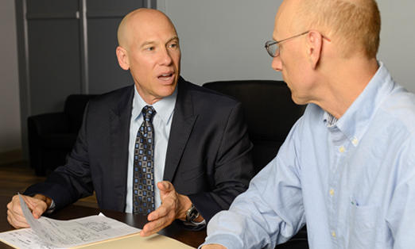

Tampa Counsel For Complex Collisions
When an incident involves multiple participants or conflicting accounts, legal analysis may depend on how technical information is interpreted rather than on the first narrative. A qualified Tampa Car Accident Lawyer can examine whether the available evidence and testimony support a consistent explanation of what occurred. Questions about authentication and chain of custody may affect whether electronic material can be used effectively. Working with a Tampa Car Accident Lawyer can help define which issues deserve independent review before a position is presented.
Different participants may offer separate accounts and rely on different legal positions, which can make a single explanation insufficient for resolving the matter. A Tampa Car Accident Lawyer can assess how governing rules affect the issues presented and whether specialized testimony would help explain the sequence of events. Technical analysis can be especially useful when the timing or movement of vehicles must be presented in a form that a court or mediator can evaluate. Advice from a Tampa Car Accident Lawyer can support disciplined preparation and reduce the risk that an important issue is overlooked during negotiation or discovery.
Deadlines and procedural choices can shape the practical course of a matter as much as the underlying facts. A Tampa Car Accident Lawyer can explain the significance of filing requirements and jurisdictional questions while helping a client consider whether negotiation, mediation, or formal litigation best fits the circumstances. A structured approach encourages informed decisions and keeps the presentation consistent as new information emerges.

Attorney Communication During Crash Litigation
Clear, timely communication can give a legal matter a more orderly foundation. A Tampa Car Accident Lawyer may begin by learning the client's preferred contact method, reviewing immediate concerns, and explaining how updates will be handled. The client should provide complete and accurate information, including details that may seem unfavorable, because omissions can create confusion later. Tampa Car Accident Lawyer can also clarify which questions require prompt attention and which decisions should wait until the available facts have been reviewed.
Once representation is established, communications from insurers, opposing counsel, or other involved parties should be handled with care. Tampa Car Accident Lawyer can help distinguish routine requests from matters that call for a considered response, while Tampa Car Accident Lawyer may prepare the client for interviews, recorded statements, mediation, or testimony. Keeping appointments, responding to reasonable requests, and reporting new developments promptly can reduce avoidable delays. Public comments and informal online discussions also deserve caution, since a remark removed later may still be preserved or misunderstood.
Good communication remains a shared responsibility throughout the matter. A client who records questions, follows agreed channels, and reports meaningful changes in personal circumstances gives the legal team information needed for timely decisions. Tampa Car Accident Lawyer can use scheduled reviews to explain procedural developments, discuss available choices, and identify the likely consequences of each option. That ongoing exchange helps align expectations without promising a particular result, while allowing important decisions to be made with a clearer understanding of the situation.
Courtroom Advocacy For Collision Cases
Effective courtroom preparation begins with a disciplined theory of the case. Tampa Car Accident Lawyer can examine the governing rules, identify the facts that must be proved, and build a position that remains consistent from the initial filing through trial. Rather than relying on broad assertions, counsel may arrange testimony and admitted exhibits around specific legal elements. This method helps the court distinguish established facts from assumptions and gives the opposing side a clear basis for responding. Tampa Car Accident Lawyer can also assess procedural deadlines and venue requirements so that a potentially sound claim is not weakened by avoidable errors.
As litigation progresses, discovery and pretrial motion practice often shape what can be presented. Tampa Car Accident Lawyer may use interrogatories, depositions, and requests for production to verify factual assertions, while preserving objections when a demand is irrelevant or overly broad. Tampa Car Accident Lawyer can present focused arguments about admissibility, legal responsibility, or the scope of damages, allowing the judge to resolve threshold issues before jurors hear the case. Careful preparation also helps witnesses answer directly and keeps exhibits tied to facts that matter under the applicable standard.
At trial, persuasion depends on more than reciting a sequence of events. Tampa Car Accident Lawyer can use opening remarks to establish a clear framework, question witnesses in a logical order, and connect admitted evidence to the requested result. A measured presentation respects the court, addresses weaknesses without exaggeration, and keeps the argument tied to the governing standard. Whether the matter concludes through negotiation or a verdict, trial-ready preparation can support sound decisions and ensure that the client's position is presented with clarity and purpose.
DISTASIO INJURY LAW
DISTASIO INJURY LAW
1112 Channelside Drive Suite 5 Tampa, FL 33602
(813) 729-6859